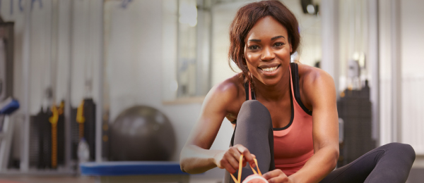
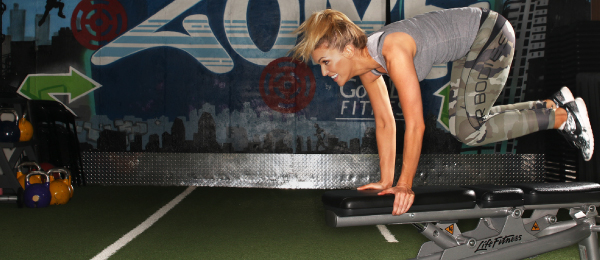
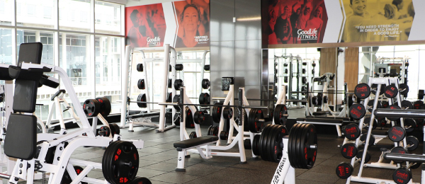

Strength and Conditioning
Work the whole body effectively using suspension straps and functional body weight exercises such as bending, jumping, pushing, pulling and squatting to build strength and stamina.
Strength and Conditioning
Work the whole body effectively using suspension straps and functional body weight exercises such as bending, jumping, pushing, pulling and squatting to build strength and stamina.

5 easy ways to burn more calories
HAVE YOU BEEN neglecting your training routine by sitting on the couch too long, devouring snacks while binge-watching the latest show? (Yeah, it happens to all of us.)
But here's the thing: A sedentary lifestyle can be seriously dangerous to your health, as research continues to suggest. And sure, you can undo some of the damage with light or moderate physical activity at work, but professional desk jockeys know all too well that the average office drone doesn't have time for a heart-pounding workout.
5 easy ways to burn more calories
HAVE YOU BEEN neglecting your training routine by sitting on the couch too long, devouring snacks while binge-watching the latest show? (Yeah, it happens to all of us.)
But here's the thing: A sedentary lifestyle can be seriously dangerous to your health, as research continues to suggest. And sure, you can undo some of the damage with light or moderate physical activity at work, but professional desk jockeys know all too well that the average office drone doesn't have time for a heart-pounding workout.
1. Shun the elevator: Next time you're at work and need to go to a meeting or grab some food from the cafeteria, take the stairs. If you work on the 20th floor, take the elevator part of the way and walk the rest.
2. Walk while on conference calls: Don't just sit in your office rolling your eyes when you can be outside stretching your legs with a nice walk. Find a relatively quiet place to walk, and call in from your cell phone. Use a headset with an easy mute button to avoid picking up noise from traffic or wind.
3. Get off the subway or bus: Ditch your commuting method one stop early and walk the rest of the way. During rush hour, you might even find that you get to your office faster this way.
4. Get a new best friend: A study found that dog owners are 34% more likely to get enough exercise. In fact, they exercised more overall, in addition to the minutes spent walking their best friends. (An extra payoff? Duke gets a little more exercise, too.)
5. Watch television on the move: Ride a stationary bike or do exercises instead of sitting on the couch.
Bodypump
BODYPUMP, the original LES MILLS barbell exercise class, will sculpt, tone and strengthen your entire body, fast! Focusing on low weight loads and high repetition movements, you'll burn fat, gain strength and quickly produce lean body muscle conditioning.
Bodypump
BODYPUMP, the original LES MILLS barbell exercise class, will sculpt, tone and strengthen your entire body, fast! Focusing on low weight loads and high repetition movements, you'll burn fat, gain strength and quickly produce lean body muscle conditioning.

Freestyle
An overall body conditioning class in a circuit format to improve strength, endurance and form.
Freestyle
An overall body conditioning class in a circuit format to improve strength, endurance and form.

Functional training
When it comes to new exercise programs, the latest buzz phrase in the fitness industry is “functional training”. What's it all about? Is it any good?
Functional training
When it comes to new exercise programs, the latest buzz phrase in the fitness industry is “functional training”. What's it all about? Is it any good?
Functional Training. What is it?
The key to functional exercise is teaching the muscles to work together rather than isolating them to work independently, much like you would in everyday life.
Functional training includes exercises that will help improve your strength, mobility and stability for everyday life. A great example of a functional exercise is a Deadlift; as this execise will help increase your core, lower back and leg strength which has a crossover to your everyday life such as picking up heavy shopping bags or young children.
When you think of traditional weight training you tend to focus on isolating muscle with machines, training programs that isolate muscle groups such as a the usual body part weight training split, chest one day, arms another or exercises that use just a single joint like the bicep curl.
While these styles of training have their place, functional training proves to be efficient by incorporating exercises which use multiple joints and working together to complete the exercise. These exercises will also incorporate a range of different movement patterns.
In a nutshell our definition of Functional Training is all aobut teaching all our muscles to work together in real life positions and situations.
So we think this type of training definetely fine in our gym long term and it is here to stay. When performed under the correct guidance and at the correct intensities it is sustainable form of effective training.
We recommend 3 Functional Strength sessions per week, along with other forms of cross training ie Cardio, Core, Mobility. For this reason we have developed the Platinum Club which allows us to deliver functional training sessions which include a variety of exercises that work on flexibility, core, balance, strength and power, focusing on multiple movement planes. These sessions along with the Group Exercise roster provides options for you for every fitness need or goal.
MOSSA Let's Move
Beat the cold and fire up your muscles with Group Power! Element Fitness Club is the ONLY gym to offer Mossa Group Power. Check out Element.com for a class schedule. ALL group fitness classes are included with your membership!
MOSSA Let's Move
Beat the cold and fire up your muscles with Group Power! Element Fitness Club is the ONLY gym to offer Mossa Group Power. Check out Element.com for a class schedule. ALL group fitness classes are included with your membership!